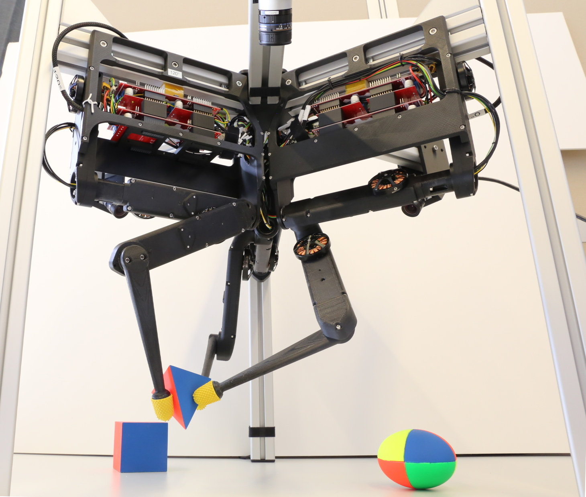

Welcome to the TriFinger Robot Simulation docs!¶
This is the accompanying documentation of the trifinger_simulation package.
To know more about the TriFinger robots, check out our official project website, and the preprint of this work.
Note
The Real Robot Challenge is currently in progress! Please refer to the official site of the Real Robot Challenge for more details! Also, note that this is not the challenge simulator. The challenge simulator can be found on rrc_simulation.
Dive in!
Ease of Use with a Real Robot
API Documentation
Indices and tables¶
Cite Us!¶
If you are using this package in you academic work, please cite this repository and also the corresponding paper:
@misc{trifinger-simulation,
author = {Joshi, Shruti and Widmaier, Felix and Agrawal, Vaibhav and Wüthrich, Manuel},
year = {2020},
publisher = {GitHub},
journal = {GitHub repository},
howpublished = {\url{https://github.com/open-dynamic-robot-initiative/trifinger_simulation}},
}
@misc{wthrich2020trifinger,
title={TriFinger: An Open-Source Robot for Learning Dexterity},
author={Manuel Wüthrich and Felix Widmaier and Felix Grimminger and Joel Akpo and Shruti Joshi and Vaibhav Agrawal and Bilal Hammoud and Majid Khadiv and Miroslav Bogdanovic and Vincent Berenz and Julian Viereck and Maximilien Naveau and Ludovic Righetti and Bernhard Schölkopf and Stefan Bauer},
year={2020},
eprint={2008.03596},
archivePrefix={arXiv},
primaryClass={cs.RO}
}